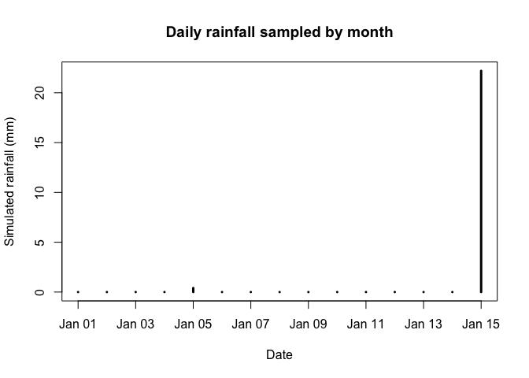

Overview
climecol provides tools for archiving, cleaning, analyzing, and visualizing weather and climate data for ecological and infectious-disease modeling. It ships curated daily weather data and simple helpers for quick plotting and analysis.
Installation
You can install the development version of climecol from GitHub with:
# install.packages("devtools")
devtools::install_github("jbaafi/climecol")(Alternatively: pak::pak("jbaafi/climecol").)
Data Importation
library(climecol)
wx <- read_weather_csv("/Users/jbaafi/Desktop/data.csv")
qa <- validate_weather(wx, temp_bounds = c(-50, 50), rain_max = 150, snow_max = 60)
qa$summaryGap handling and imputation
The package provides tools to handle gaps in weather records:
-
complete_daily_calendar()ensures a full daily date sequence per station, making gaps explicit.
-
summarise_gaps()quantifies missingness, coverage, and longest contiguous gaps.
-
impute_weather()offers lightweight fillers (last observation carried forward, linear, or spline).
Together, these helpers make it easy to prepare consistent daily time series for downstream climate-driven modeling.
Photoperiod (daylength)
The package includes fast, dependency-free photoperiod helpers based on a standard solar-geometry approximation (Forsythe et al., 1995). These return hours of daylight from date and latitude only—ideal as a smooth seasonal driver for ecological models.
Functions
daylength_f95(date, lat)→ numeric vector of daylight hours-
photoperiod_year(year, lat = NULL, location = NULL, aggregate = c("none","month"))- Supply either
lator a built-inlocationkey
-
aggregate = "month"returns monthly means (12 rows)
- Supply either
photoperiod_sites()→ named vector of built-in locations and latitudes
(keys are matched case-insensitively; punctuation/spacing ignored)
Quick examples
library(climecol)
# Daily photoperiod for 2024 at St. John's (NL) via location
pp_nl <- photoperiod_year(2024, location = "St John's")
head(pp_nl)
#> date daylength_hours lat location
#> 1 2024-01-01 8.517220 47.56 st_johns
#> 2 2024-01-02 8.532937 47.56 st_johns
#> 3 2024-01-03 8.549903 47.56 st_johns
#> 4 2024-01-04 8.568104 47.56 st_johns
#> 5 2024-01-05 8.587527 47.56 st_johns
#> 6 2024-01-06 8.608155 47.56 st_johns
# Monthly mean photoperiod at 47.56°N
photoperiod_year(2024, lat = 47.56, aggregate = "month")
#> date daylength_hours lat location
#> 1 2024-01-01 8.916550 47.56 lat_47.56
#> 2 2024-02-01 10.207203 47.56 lat_47.56
#> 3 2024-03-01 11.887952 47.56 lat_47.56
#> 4 2024-04-01 13.652182 47.56 lat_47.56
#> 5 2024-05-01 15.161088 47.56 lat_47.56
#> 6 2024-06-01 15.912512 47.56 lat_47.56
#> 7 2024-07-01 15.487501 47.56 lat_47.56
#> 8 2024-08-01 14.115072 47.56 lat_47.56
#> 9 2024-09-01 12.384641 47.56 lat_47.56
#> 10 2024-10-01 10.635663 47.56 lat_47.56
#> 11 2024-11-01 9.175674 47.56 lat_47.56
#> 12 2024-12-01 8.490440 47.56 lat_47.56
# Saint John (NB) vs St. John's (NL) — distinct cities
photoperiod_year(2024, location = "Saint John", aggregate = "month")
#> date daylength_hours lat location
#> 1 2024-01-01 9.172983 45.27 saint_john
#> 2 2024-02-01 10.354056 45.27 saint_john
#> 3 2024-03-01 11.902529 45.27 saint_john
#> 4 2024-04-01 13.528932 45.27 saint_john
#> 5 2024-05-01 14.910968 45.27 saint_john
#> 6 2024-06-01 15.593079 45.27 saint_john
#> 7 2024-07-01 15.207900 45.27 saint_john
#> 8 2024-08-01 13.954218 45.27 saint_john
#> 9 2024-09-01 12.360833 45.27 saint_john
#> 10 2024-10-01 10.748119 45.27 saint_john
#> 11 2024-11-01 9.409230 45.27 saint_john
#> 12 2024-12-01 8.785616 45.27 saint_john
photoperiod_year(2024, location = "St John's", aggregate = "month")
#> date daylength_hours lat location
#> 1 2024-01-01 8.916550 47.56 st_johns
#> 2 2024-02-01 10.207203 47.56 st_johns
#> 3 2024-03-01 11.887952 47.56 st_johns
#> 4 2024-04-01 13.652182 47.56 st_johns
#> 5 2024-05-01 15.161088 47.56 st_johns
#> 6 2024-06-01 15.912512 47.56 st_johns
#> 7 2024-07-01 15.487501 47.56 st_johns
#> 8 2024-08-01 14.115072 47.56 st_johns
#> 9 2024-09-01 12.384641 47.56 st_johns
#> 10 2024-10-01 10.635663 47.56 st_johns
#> 11 2024-11-01 9.175674 47.56 st_johns
#> 12 2024-12-01 8.490440 47.56 st_johns
# List built-in sites
photoperiod_sites()
#> st_johns saint_john kumasi nairobi cape_town ain_mahbel
#> 47.56 45.27 6.69 -1.29 -33.92 34.24A simple plot of daylength over the year:
plot(pp_nl$date, pp_nl$daylength_hours, type = "l",
xlab = "Date", ylab = "Daylength (hours)",
main = "Photoperiod at St. John's, NL (2024)")Example
Load the package and explore the included Newfoundland dataset (2008–2023):
library(climecol)
# Load dataset
data(weather_nl)
# Peek at structure
dplyr::glimpse(weather_nl)
#> Rows: 5,844
#> Columns: 13
#> $ date <date> 2008-01-01, 2008-01-02, 2008-01-03, 2008-01-04, 2008-01-…
#> $ Year <int> 2008, 2008, 2008, 2008, 2008, 2008, 2008, 2008, 2008, 200…
#> $ Month <int> 1, 1, 1, 1, 1, 1, 1, 1, 1, 1, 1, 1, 1, 1, 1, 1, 1, 1, 1, …
#> $ Day <int> 1, 2, 3, 4, 5, 6, 7, 8, 9, 10, 11, 12, 13, 14, 15, 16, 17…
#> $ tmin_c <dbl> -6.6, -8.1, -11.0, -12.6, -9.6, -10.5, -4.2, -1.2, -2.5, …
#> $ tmax_c <dbl> 1.6, 2.0, -0.4, -5.9, -2.4, -2.5, 2.5, 3.8, 0.5, 9.5, 0.5…
#> $ tavg_c <dbl> -2.5, -3.1, -5.7, -9.3, -6.0, -6.5, -0.9, 1.3, -1.0, 4.8,…
#> $ rain_mm <dbl> 0.2, 0.0, 0.2, 0.0, 0.0, 0.0, 0.0, 0.6, 0.8, 8.2, 0.0, 11…
#> $ precip_mm <dbl> 2.0, 4.5, 0.2, 0.0, 1.6, 2.2, 0.0, 0.6, 1.8, 8.2, 0.0, 11…
#> $ snow_cm <dbl> 1.8, 5.0, 0.0, 0.0, 2.6, 6.4, 0.0, 0.0, 1.8, 0.0, 0.0, 0.…
#> $ Station.Name <chr> "ST JOHN'S A", "ST JOHN'S A", "ST JOHN'S A", "ST JOHN'S A…
#> $ Climate.ID <dbl> 8403506, 8403506, 8403506, 8403506, 8403506, 8403506, 840…
#> $ station <chr> "ST JOHN'S A", "ST JOHN'S A", "ST JOHN'S A", "ST JOHN'S A…Photoperiod fits (seasonal curve)
# Option A: generate photoperiod from a location for two years and fit
res <- fit_seasonal_photo(location = "St John's",
years = c(2023, 2024),
funcs = c("sin1","sin2"),
plot = TRUE)
res$metrics
#> # A tibble: 2 × 3
#> model AIC R2
#> <chr> <dbl> <dbl>
#> 1 sin1 -934. 0.999
#> 2 sin2 -943. 0.999
if (!is.null(res$plot)) print(res$plot)
# Option B: provide your own photoperiod data frame
# df <- data.frame(date = as.Date("2023-01-01") + 0:729,
# photoperiod_hours = 12 + 6*cos(2*pi*(1:730)/365))
# fit_seasonal_photo(df = df, funcs = "sin1", plot = TRUE)
# Custom model example
res2 <- fit_seasonal_photo(
location = "St John's",
years = c(2023, 2024),
funcs = "sin1",
custom = list(
cos1 = list(
formula = avg_photo ~ a + b * cos(2*pi*day_of_year/365),
start = list(a = 12, b = 6)
)
)
)
res2$metrics
#> # A tibble: 2 × 3
#> model AIC R2
#> <chr> <dbl> <dbl>
#> 1 sin1 -934. 0.999
#> 2 cos1 495. 0.967Rainfall data
Plot daily rainfall:
plot_rainfall(weather_nl)
This figure was generated when knitting this README.
Seasonal temperature fitting
data(weather_nl)
res <- fit_seasonal_temp(weather_nl, funcs = c("sin1","sin2"), plot = TRUE)
res$metrics
#> # A tibble: 2 × 3
#> model AIC R2
#> <chr> <dbl> <dbl>
#> 1 sin1 1204. 0.971
#> 2 sin2 1159. 0.975
#> # A tibble: 2 x 3
#> model AIC R2
#> <chr> <dbl> <dbl>
#> 1 sin1 ... ...
#> 2 sin2 ... ...
# plot overlay (observed vs fitted)
res$plotCustom seasonal temperature models
In addition to the built-in sinusoidal models (sin1, cos1, etc.), you can also pass your own formula to fit_seasonal_temp() via the funcs argument.
For example, suppose we define our custom function:
#Standardize column names
df <- normalize_weather_names(weather_nl)
# Define your custom model (formula uses mean_temp ~ ... and day_of_year)
custom_models <- list(
quad = list(
formula = mean_temp ~ a + b * day_of_year + c * I(day_of_year^2),
start = list(a = mean(df$tavg_c, na.rm = TRUE), b = 0, c = 0) # <- REQUIRED
)
)
# Fit: built-ins via `funcs=`, user models via `custom=`
res <- fit_seasonal_temp(
df,
funcs = "sin1", # optional: keep a built-in for comparison
custom = custom_models,
plot = TRUE
)
# 5) Results
res$metrics # AIC and R2 per model
#> # A tibble: 2 × 3
#> model AIC R2
#> <chr> <dbl> <dbl>
#> 1 sin1 1204. 0.971
#> 2 quad 1984. 0.758
res$plot # overlay plot
Stochastic Rainfall Sampling by Month
The function sample_rainfall_by_month() generates a stochastic daily rainfall time series while preserving the monthly seasonality observed in the historical record.
This allows you to produce rainfall inputs for simulation models that retain realistic wet/dry season structure without imposing a statistical distribution.
library(climecol)
data(weather_nl)
# Define target dates to simulate
set.seed(123)
dates <- seq.Date(as.Date("2012-01-01"), as.Date("2012-01-15"), by = "day")
# Sample synthetic daily rainfall using historical monthly pools
rain_sim <- sample_rainfall_by_month(dates, weather_nl)
# Preview
head(data.frame(date = dates, rain_sim_mm = rain_sim), 10)
#> date rain_sim_mm
#> 1 2012-01-01 0.0
#> 2 2012-01-02 0.0
#> 3 2012-01-03 0.0
#> 4 2012-01-04 0.0
#> 5 2012-01-05 0.4
#> 6 2012-01-06 0.0
#> 7 2012-01-07 0.0
#> 8 2012-01-08 0.0
#> 9 2012-01-09 0.0
#> 10 2012-01-10 0.0
plot(dates, rain_sim, type = "h", lwd = 3,
xlab = "Date", ylab = "Simulated rainfall (mm)",
main = "Daily rainfall sampled by month")
The sampled values are drawn from the same-month historical rainfall distribution, so wet and dry months retain their distinct variability patterns.
Simulating Temperature Shift Scenarios (baseline + deltas)
data(weather_nl)
fit <- fit_seasonal_temp(weather_nl, funcs = c("sin1","sin2"))
# Over day-of-year (1..365)
sims <- simulate_temp_shifts(fit, deltas = 0:5) # long format
head(sims)
#> # A tibble: 6 × 3
#> day_of_year key temp_c
#> <dbl> <fct> <dbl>
#> 1 1 baseline -1.16
#> 2 1 Temp+0C -1.16
#> 3 1 Temp+1C -0.159
#> 4 1 Temp+2C 0.841
#> 5 1 Temp+3C 1.84
#> 6 1 Temp+4C 2.84
# Plot
library(ggplot2)
ggplot(sims, aes(x = day_of_year)) +
geom_line(aes(y = temp_c, color = key, linetype = key), linewidth = 0.9) +
labs(x = "Day of year", y = "Mean temperature (°C)", color = "Scenario", linetype = "Scenario") +
theme_minimal()
# Map scenarios to an actual year (e.g., 2024) for modeling
days <- seq(as.Date("2024-01-01"), as.Date("2024-12-31"), by = "day")
sims_2024 <- simulate_temp_shifts(fit, deltas = c(0, 2, 5), dates = days)
head(sims_2024)
#> # A tibble: 6 × 3
#> date key temp_c
#> <date> <fct> <dbl>
#> 1 2024-01-01 baseline -1.16
#> 2 2024-01-01 Temp+0C -1.16
#> 3 2024-01-01 Temp+2C 0.841
#> 4 2024-01-01 Temp+5C 3.84
#> 5 2024-01-02 baseline -1.29
#> 6 2024-01-02 Temp+0C -1.29Rainfall scenarios (baseline/dry/wet/erratic)
data(weather_nl)
set.seed(123)
sim <- simulate_rainfall_scenarios(
weather_nl,
times = as.Date("2012-01-01") + 0:90,
scenarios = c("baseline","dry","wet","erratic"),
plot = TRUE
)
head(sim$series)
#> # A tibble: 6 × 4
#> date month scenario rain_mm
#> <date> <int> <chr> <dbl>
#> 1 2012-01-01 1 baseline 0
#> 2 2012-01-02 1 baseline 0
#> 3 2012-01-03 1 baseline 0
#> 4 2012-01-04 1 baseline 0
#> 5 2012-01-05 1 baseline 0.4
#> 6 2012-01-06 1 baseline 0
if (!is.null(sim$plot)) sim$plotContributing
Issues and pull requests are welcome via the repo’s issue tracker.
Contact
If you’re interested in discussing collaborations or have questions about climecol, email me at jbaafi@mun.ca.